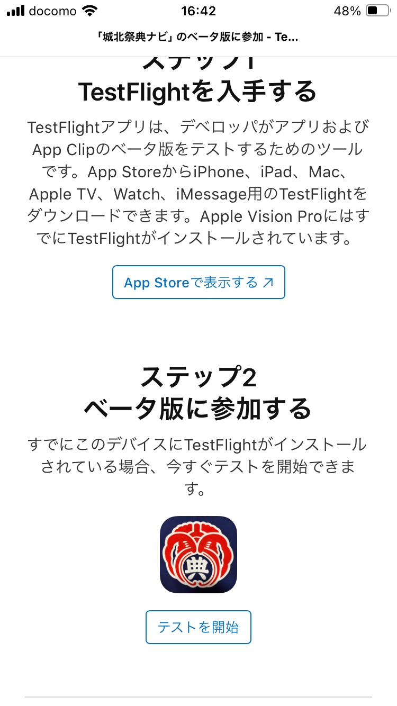

トップへ戻る
アプリのダウンロード方法について
ダウンロードできる対象を城北町の方に限定するため、特殊なダウンロード方法を取ります。
iPhone
Googleフォームに「氏名」、「Apple ID(@icloudで終わるメールアドレス)」、「LINEの表示名」、「ダウンロードリンクの送付方法(メールアドレスもしくはLINE)」を記載して送信してください。送信された情報は開発者のみが閲覧可能です。
「App Store」アプリから
「TestFlight」
アプリをダウンロードしてください。
「TestFlight」を開きAppleIDでログインしてください。
同意画面などが表示されるため、手続きを完了してください。この同意事項はAppleと皆さんとの間で交わされます。
開発者がGoogleフォームへの回答を確認後、「ダウンロードリンクの送付方法」に記載された送付方法でダウンロード用のリンクを送付します。リンクを開き「ステップ2」の「テストを開始」ボタンを押してください。
LINEでの送信元は「松下和也」、メールでの送信元は「kmatsushita.dev@gmail.com」、件名は「城北町採点ナビダウンロードリンク」です。
上記の他、メールアドレス(@icloud.com)宛に「App Store Connect」からメールが届きます。こちらのメールに記載された「View in TestFlight」リンクを押しても構いません。

リンクを押すと、「TestFlight」アプリが自動で開きます。「城北祭典ナビ」の画面が表示されるので「同意する」、「インストール」を押して、インストールを完了してください。
インストール完了後、「開く」を押してアプリを立ち上げ、後述する説明を元にアプリをお使いください。
ダウンロード後にバグ修正等でアップデートがあった場合には、「App Store Connect」からメールが届きます。ご迷惑をおかけしますが同様の手続きを踏みアップデートをしていただけると幸いです。
ダウンロード方法の詳細については
TestFlightの使い方（テスター向け）
も参考にしてください。